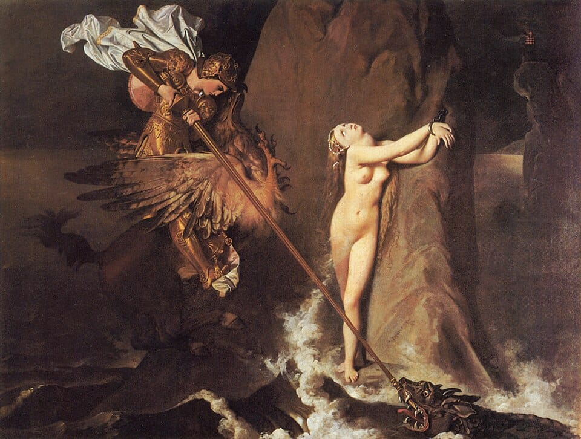
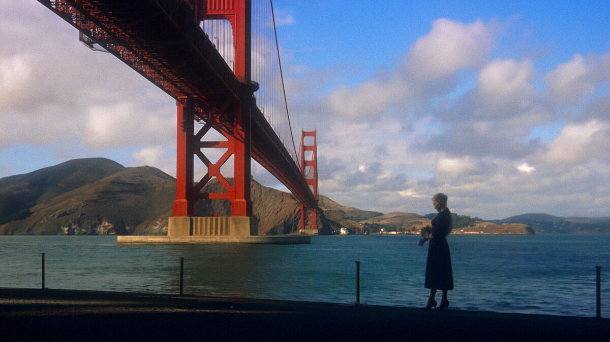

Pedro Schacht
02.03.10
Apreciador da Arte. Escrevo sobre a 7ª no Letterboxd
Música

Álbuns favoritos:
- A Tribe Called Quest – The Low End Theory
- Godspeed You! Black Emperor – Lift Your Skinny Fists Like Antennas to Heaven
- Godspeed You! Black Emperor – F♯ A♯ ∞ (ambas versões)
- (E quase todos do Kanye West)
Gêneros favoritos:
hip hop / jazz rap
Post-Rock
MPB
Cinema
Diretor favorito: Alfred Hitchcock
Filmes favoritos:
Deep End (1970) Directed by Jerzy Skolimowski
Vertigo (1958) Directed by Alfred Hitchcock
Il Sorpasso (1962) Directed by Dino Risi